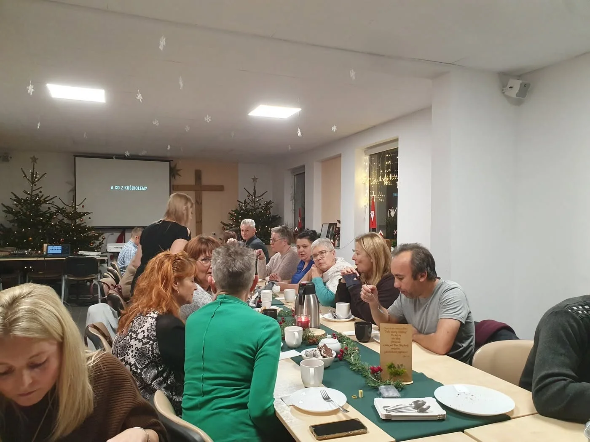

Kontakt
Porozmawiajmy o Alpha w Twojej parafii.
Napisz, skąd jesteś i na jakim etapie jesteście. Nie musisz mieć jeszcze zespołu ani gotowego terminu. Wspólnie poszukamy pierwszego kroku.
Napisz kilka zdań
Od czego chcecie zacząć?
Szukasz Alpha dla siebie?
Też jesteś w dobrym miejscu.
Napisz do nas, jeśli chcesz wziąć udział w Alpha jako gość. Powiemy, czy w Lubecku trwa nabór na kolejną edycję, albo pomożemy poszukać spotkania w Twojej okolicy.
Zapytaj o Alpha dla siebie
Zanim napiszesz
Najczęstsze pierwsze pytania
Czy możemy najpierw tylko porozmawiać?
Tak. Pierwsza rozmowa nie zobowiązuje do organizacji kursu. Służy poznaniu sytuacji i odpowiedzi na pytania.
Czy możecie pomóc w rozmowie z proboszczem?
Tak. Możemy pomóc przygotować argumenty, materiały i spotkanie, podczas którego przedstawimy Alpha oraz doświadczenie Lubecka.
Czy szkolenie może odbyć się u nas?
Taką możliwość ustalamy indywidualnie, zależnie od miejsca, terminu i etapu przygotowania zespołu.